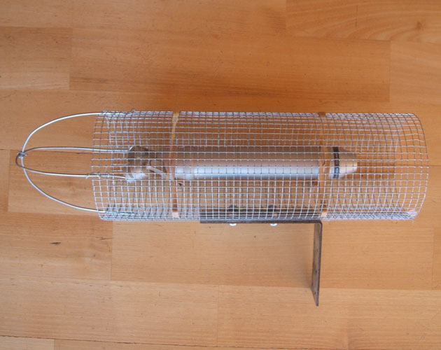
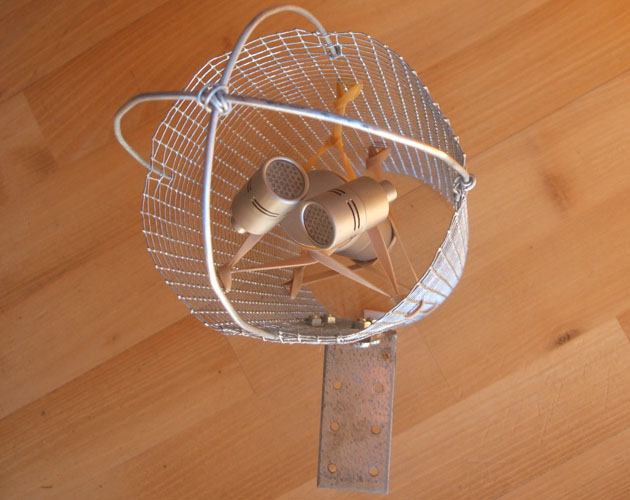
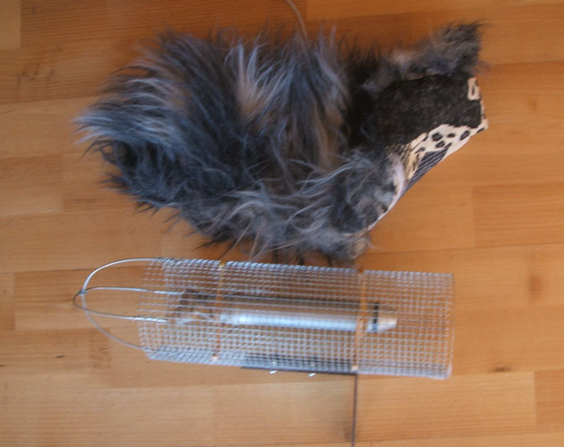

Windscreen for Microphones
Few years ago we made a DIY windshield for a recording trip in Iceland. It's
a windy country and
and it can be very frustrating to get the occational blow in the mic during
a good recording session.
People expressed wish to see the stuff in order to make their own, so here you
go...
This windshield was made out of material costing around 40 Euros.
Check the pictures (they speak for themselves) and go to the hardware store.

Figure 1: Here you see a Rode NT-4 microphone inside the windshield
frame. The frame is made
out of a folded hen net, some wires and a iron bar that is screwed into the
net.

Figure 2: Rubber bands are used to hold the microphone steady within the frame.

Figure 3: In a fabric store I found this sexy fake fur for
the dead cat. It's made of thin and open
material so, the soundwaves travel easily through it.
Good luck with making your own microphone windshield, and please send us some pictures of yours.
Making a microphone windshield. DIY mic windshield. Dead
cat windshield, microphone windscreen,
Zeppelin, microphone zeppelin. Microphone windscreen, mic windscreen. DIY mic
windscreen.